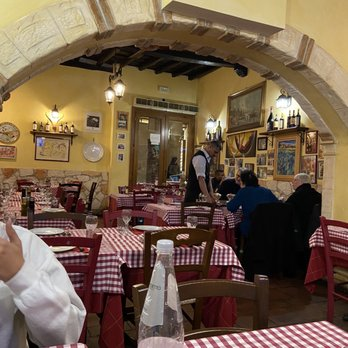
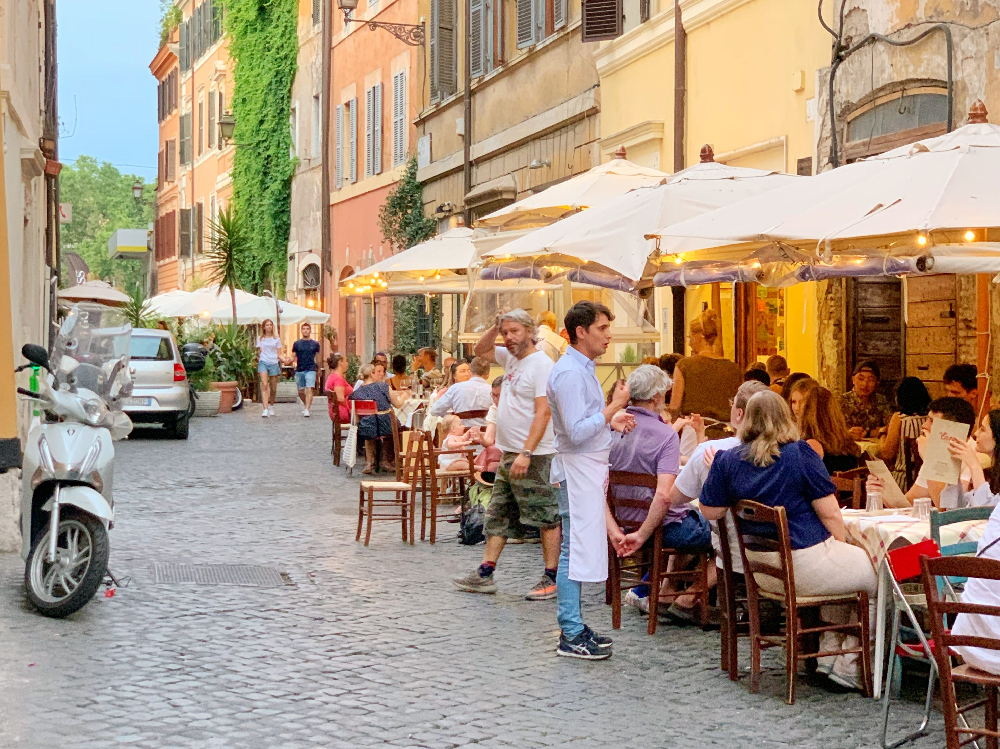
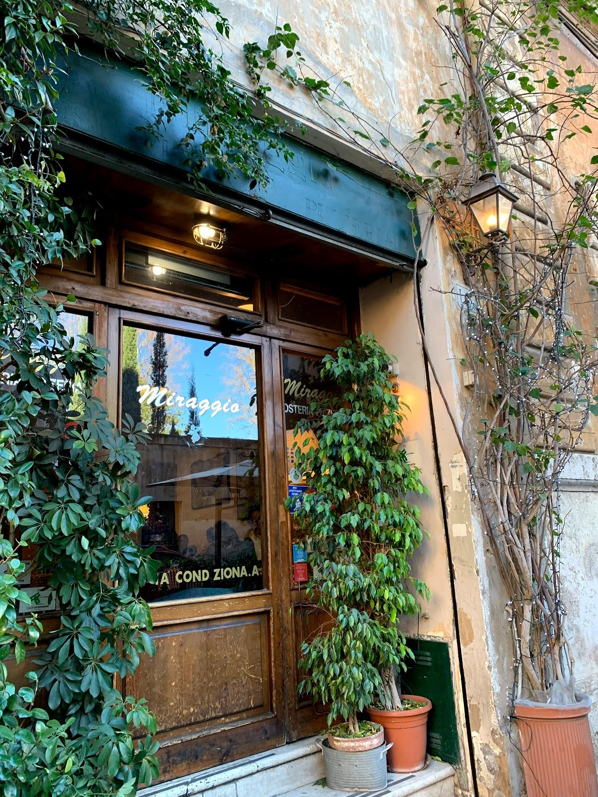

Cucina Romana
Rome's cuisine, a central facet of Italian gastronomy, emphasizes fresh, local ingredients and traditional recipes. Known for iconic dishes like pasta carbonara, amatriciana, and cacio e pepe, Roman cuisine embodies hearty flavors. Sumptuous street food offerings like supplì also form the city's vibrant food culture. Whether it's indulging in Pecorino Romano cheese, savoring the rich Roman artichokes, or relishing the unique culinary masterpiece of saltimbocca, the capital's rich history is reflected in its food.
Essential Roman Dishes
- Carbonara
- Cacio e Pepe
- Roman Tripe
- Suppli
- Pizza Bianca
Dish Title
Tony's Tavernetta
Tony 29's Tavernetta in Trastevere, Rome, is a charming dining establishment known for its warm ambiance and authentic Italian cuisine. Nestled in the historic Trastevere neighborhood, the restaurant offers a delightful blend of traditional flavors and a cozy atmosphere. Guests praise the attentive service and the extensive menu that showcases a variety of classic Roman dishes, from pasta to seafood. With its inviting setting and delectable dishes, Tony 29's Tavernetta stands out as a must-visit culinary gem in the heart of Rome.
Check out Tony's on Yelp
Recommended Dishes
Salmon Gnocci
Bistecca Fiorentina
Truffle Pasta

Tiramisu
Enzo's
Trattoria Da Enzo al 29 in Trastevere, Rome, is like your go-to spot for amazing Roman grub and good vibes. Tucked away in the cozy Trastevere district, this place is all about real Italian eats and a laid-back atmosphere that feels just right. Their menu is like a love letter to classic Roman dishes; think killer pasta, tasty antipasti, and hearty mains that hit the spot. Locals and visitors love the chill vibe, the cool staff, and the fact that Da Enzo al 29 is keeping the spirit of Roman food alive and kicking. It's basically a must for anyone craving a taste of authentic Italian goodness.
Check out Enzo's on Yelp
Recommended Dishes
Bruschetta
Cacio e Pepe
Roasted Pigeon
Pistaccio Gelato
Il Miraggio
Miraggio Pizzeria in Trastevere is like that cozy pizza joint you stumble upon in Rome; laid-back, unassuming, and seriously tasty. Tucked away in the heart of the city, this spot is all about good vibes and even better pizza. The crust has that perfect crunch from the wood-fired oven, and the toppings are a flavor explosion. Whether you're into classic Margheritas or feeling adventurous with their creative combos, Miraggio is the kind of place where you can kick back, enjoy great pizza, and soak in the easygoing Roman vibes.
Check out Miraggio on Yelp
Recommended Dishes
Margherita Pizza
Pizza Bianca